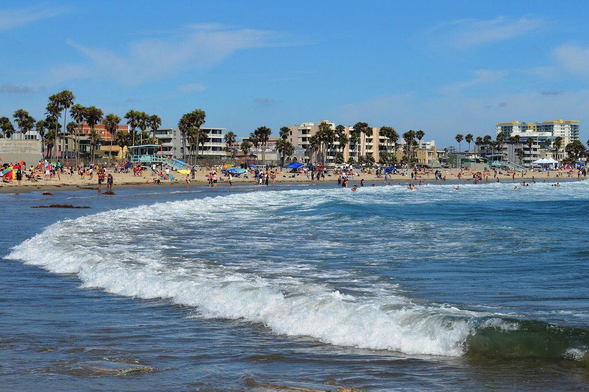
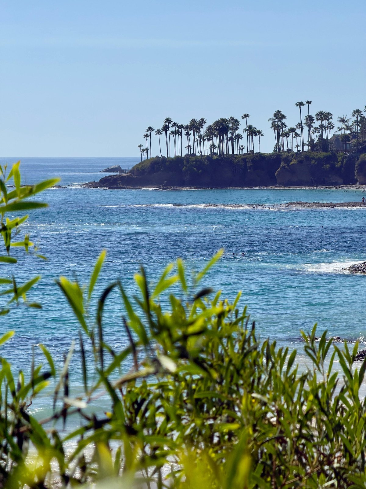

Santa Monica

Palms line the path above a wide beach, with the Santa Monica Mountains in view.
Google Maps
Palms line the path above a wide beach, with the Santa Monica Mountains in view.
Google Maps
A wide sandy beach with a row of palms behind the sand and the ocean in front.
Google MapsPalms stand on the sand at sunset, with the harbor and shoreline in view.
Google Maps
Palms stand near the pier and a wide sandy beach.
Google Maps
Palms stand on the sand at the edge of the water.
Google Maps
A small cove sits below the bluff at Lookout Point, with palms along the path.
Google Maps
Palms stand on a headland above turquoise water.
Google Maps